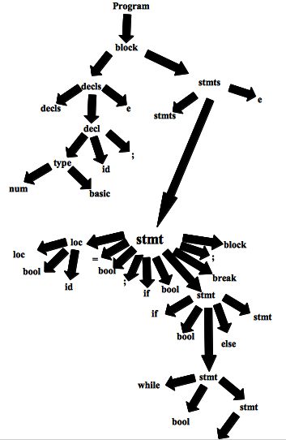

Conhecer como um compilador funciona é essencial para entender a ligação entre Engenharia de Software, Linguagens de Programação, Sistemas Operacionais e Arquitetura de Computadores, uma vez que a construção de compiladores abrange tais áreas de estudo em Ciências da Computação. O desafio dos projetistas de compiladores é criar algoritmos mais eficientes que visem obter um melhor desempenho no uso de memória e processamento. Podemos entender que, o compilador converte um programa originado de uma linguagem de programação para uma linguagem que possa ser entendida e executada por um computador. Durante a compilação são executadas tarefas que fazem a tradução de uma linguagem em outra. Para isso, o compilador deve preservar o significado do programa a ser compilado e melhorar o programa de entrada de tal forma que seja perceptível. Utiliza-se ferramentas que facilitam a criação e manutenção de compiladores, como, por exemplo, Java, C e C++, que geram códigos que podem ser incluídos no projeto do compilador. Um exemplo são os geradores de analisadores léxicos, que com base em expressões regulares geram um algoritmo capaz de identificar os elementos léxicos de uma linguagem de programação. O compilador deve traduzir um conjunto infinito de programas escritos em uma linguagem de programação e o resultado desse processo precisa ser um código eficiente que deve ser executado em diversas arquiteturas de processadores. Em resumo, uma linguagem de programação é considerada de alto nível quando sua representação está próxima do domínio da aplicação e do problema a ser resolvido. Os computadores por sua vez possuem sua própria linguagem denominada de baixo nível ou linguagem de máquina. Os compiladores são utilizados justamente para traduzir a linguagem de alto nível (linguagem de programação) posta na entrada fonte, para uma linguagem de baixo nível ou conforme mencionamos anteriormente, linguagem de máquina, que é a saída.
Quando pensamos no processo de compilação, devemos pensar que sua estrutura se divide em fases e essas são representadas por duas tarefas, análise e síntese. A tarefa de análise também chamada de front-end divide o programa fonte em partes e impõe uma estrutura gramatical sobre elas, uma das principais responsabilidades da tarefa de análise é garantir que a sintaxe e semântica do programa fonte estejam corretos. A tarefa de síntese constrói o programa objeto a partir da representação criada na tarefa de análise. A síntese é conhecida como back-end.
Resumidamente, o processo de análise inicia-se com o analisador léxico que percorre todo o programa fonte e transforma o texto em um fluxo de tokens, a criando a tabela de símbolos. Em seguida passamos pela análise sintática que lê o fluxo de tokens e valida a estrutura do programa criando a árvore sintática. A terceira fase é a análise semântica que é responsável por garantir as regras semânticas.
É a primeira fase do processo de compilação, que tem como objetivo identificar unidades lexicais ou lexemas, lendo todos os caracteres do programa fonte e verificando se eles pertencem ao alfabeto da linguagem. Caso um caractere não pertença, deve ser gerado um erro léxico. Esse processo resulta um conjunto de tokens (símbolos léxicos) que são formados por palavras reservadas,nessa etapa é criada a tabela de símbolos.
O analisador léxico deve achar 6 lexemas e saber qual categoria correspondem. Deve também, permitir identificar na linguagem repetições de subconjuntos permitindo que seja possível identificar e classificar esses subconjuntos, por exemplo subconjunto de palavras reservadas. Nessa fase o processamento de uma linguagem pode ser feito por gramáticas regulares podendo ser formalmente descrito por expressões regulares. As rotinas que processam essa linguagem modelam algoritmos construídos a partir de autômatos finitos.
Nessa etapa o objetivo é reconhecer se a estrutura gramatical do código fonte está de acordo com as regras sintáticas da linguagem, ou seja, validar a gramática do programa. Faz- se uma varredura na sequência de tokens recebidas do analisador léxico, logo após, é produzida uma estrutura de dados em formato de árvore conhecida como árvore sintática (é uma estrutura de dados em forma de árvore ou grafo que representa sequência hierárquica da linguagem de programação ou programa fonte e permite representar cada elemento do programa e os demais passos do compilador). Caso uma construção seja reconhecida com inválida um erro sintético deve ser gerado.
Nesta última etapa, verificamos se a semântica do programa fonte tem consistência (não possui erros) e a partir da utilização da a árvore sintática junto às informações contidas na tabela de símbolos podemos gerar uma lista de tarefas.
O código Java para o Front-End do compilador é composto por cinco pacotes, armazenados como um diretório e separado com um arquivo por classe, são eles: main, lexer, symbol, parser e inter - que possuem diferentes funções dentro da aplicação.
O pacote inter possui classes para as construções da linguagem da sintaxe abstrata. O pacote main possui a classe que executa o algoritmo criando o analisador léxico e o analisador sintático. Pacote lexer é uma extensão do código para o analisador léxico. Pacote parser lê o fluxo de token e constrói a árvore sintática. Pacote symbolsimplementa as tabelas de símbolos e tipos.
No pacote inter existem 23 classes:
A classe Node é a principal do pacote inter, a partir dela são criadas outras subclasses, exemplo Expr e Stmt.
Expr é a classe que trata booleanos e desvios condicionais, possui os campos op e type, que representam operadores e tipos para expressão declarada.
A classe Id é apenas utilizada como identificador de endereço, como em um banco de dados onde um registro possui sua chave primária (ID).
A classe Op interpreta operadores aritméticos, unários e de acessos a arranjo (array). Arith implementa operadores binários. Temp é a classe utilizada para armazenar variáveis temporariamente. Unary é o correspondente de um operando da classe Arith, para operadores de comparação entre dois termos.
Constant é a classe que cria um objeto constante a partir de um inteiro. Logical é responsável pela criação do nó de sintaxe para os operadores de comparação OR, AND, NOT. Or, And, Not são classes de um operadores lógicos.
A classe Rel implementa operadores unários e verifica se há dois termos sendo comparados. Access classe de acessos a arranjos (array).
Stmt é uma classe parecida com a Node que trata da construção da árvore de sintaxe.
If,Else,While,Do são classes de desvio condicional e laços de repetição.
Set constrói nós e verifica tipos. SetElem implementa atribuições ao arranjo. Seq implementa uma sequência de comandos. Break é utilizada para interrupção de um comando em execução.No pacote lexer existem 6 classes:
O pacote é uma extensão do analisador léxico para o compilador. A classe Tag define constantes para serem utilizadas no algoritmo. As classes Token e Num extendem a classe Tag, pois recebem um valor de constante e o retorna com o toString. A classe Word gerencia lexemas para palavras reservadas. A Real é para números de ponto flutuante (float). Por fim, a classe Lexer possui o método scan que reconhece números, identificadores e as palavras reservadas, também reserva lexemas para objetos definidos em outras classes.
No pacote pacote parser temos a classe Parser:
Responsável pela análise sintática do compilador. Onde lê um fluxos de tokens e constrói a árvore de sintaxe chamando as funções correta.
E no pacote symbols temos 3 classes:
Este pacote é usado para implementação de símbolos e tipos. A classe Env mapeia os tokens de palavras a objetos classe Id definida no pacote inter. A classe Type é uma subclasse de Word porque os nomes dos tipos básicos (basic), são apenas palavras reservadas, a serem mapeadas de lexemas para objetos apropriados pelo analisador léxico. Os tipos possuem campo herdado de tag, de modo que o analisador sintático os trate da mesma maneira. E a classe Array herda o campo width da classe Type, essencial para o arranjo.
Tokens podem ser reconhecidos por meio de autômatos finitos, sendo que o estado final dispara o reconhecimento de um token específico e/ou um procedimento específico (inserir na tabela de símbolo, por exemplo). Normalmente constrói-se um diagrama de transição para representar o reconhecimento de tokens.
Palavras reservadas:
Constantes (Números reais, inteiros):
Cadeia de caracteres:
Sinais de pontuação (delimitadores):
Sinais de operação lógico:
Sinais de Operação relacional e de atribuição:
Sinais de Operação aritmético:
Caracteres especiais:
Identificadores:
A sintaxe é a parte da gramática que estuda a disposição das palavras na frase e das frases em um discurso. Essa etapa no processo de compilação deve reconhecer as formas do programa fonte e determinar se ele é válido ou não.
Esse modelo pode ser definido utilizando gramáticas livres de contexto que representam uma gramática formal e pode ser escrita através de algoritmos que fazem a derivação de todas as possíveis construções da linguagem.
Essas derivações tem como objetivo determinar se um fluxo de palavras se encaixa na sintaxe da linguagem de programação. Para isso, existem alguns termos utilizados na definição de linguagens de programação:
Explicando melhor, dada uma gramática G e uma sentença S o objetivo do analisador sintático é verificar se a sentença S pertence a linguagem G. O analisador sintático recebe do analisador léxico a sequência de tokens que constitui a sentença S e produz uma árvore de derivação se a sentença é válida ou emite um erro se a sentença é inválida.
O analisador sintático vê o mesmo texto que o léxico, porém como uma sequência de sentenças que deve satisfazer às regras gramaticais. E através da gramática podemos validar expressões criadas na linguagem de programação. O analisador sintático agrupa os tokens em frases gramaticais usadas pelo compilador com o objetivo de criar uma saída que representa a estrutura hierarquia do programa fonte.
As linguagens de programação em geral pertencem a uma categoria chamada de Linguagens Livres de Contexto. Umas das formas de representar essas linguagens é através de Gramáticas Livres de Contexto que são a base para a construção de analisadores sintáticos. Elas são utilizadas para especificar as regras sintáticas de uma linguagem de programação, uma linguagem regular e pode ser reconhecida por um autômato finitos determinísticos e não determinísticos, já uma Gramática Livre de Contexto pode ser reconhecida por um autômato de pilha, por exemplo.
Como mencionado anteriormente, a definição da GLC é a seguinte: < S, N, P, S >, onde N – Conjunto finito de símbolos não terminais (Conjunto finito de variáveis utilizadas para representar os conjuntos da linguagem, são formadas pelos terminais e pelos próprios símbolos não terminais), T – Conjunto finito de símbolos terminais (Conjunto finito de símbolos básicos que formam as palavras da linguagem, são representadas pelo tokens reconhecidos pelo analisador léxico), P – Conjunto de regras de produções (Representa um conjunto de regras sintáticas que representam a definição da linguagem, indicam como símbolos terminais e não terminais podem ser combinados) representado pela (→) flecha e S – Símbolo inicial da gramática (É a variável, símbolo não terminal, que representa o início da definição da linguagem).
Exemplo:G = ({S}, {a, b}, P, S)
P = {S → aSb
S → e
}
A gramática acima é formada pelas terminais a e b, que são os tokens da linguagem, como regras de produção temos aSb que obriga ter um a e b nas extremidades da palavras, o símbolo λ (ou em alguns casos "e") que significa vazio.
Durante o processo de derivação devemos aplicar as regras de produção para substituir cada símbolo não-terminal por um símbolo terminal, isso permite identificar se certa cadeia de caracteres pertence a linguagem, as regras expandem todas as produções possíveis. Como resultado desse processo temos a árvore de derivação.
O processo de derivação pode ser executado de duas maneiras, examinando os símbolos terminais da esquerda para a direita montando a árvore sintática de cima para baixo (top-down) ou examinando os símbolos terminais da direita para a esquerda montando a árvore de baixo para cima (bottom-top). É importante ressaltar que a árvore de análise sintática está diretamente relacionada à existência de derivações e independente do algoritmo utilizado, essa derivação deve produzir o mesmo resultado, ou seja a mesma árvore de derivação, caso seja diferente, temos uma ambiguidade.A árvore de derivação representa a derivação de uma sentença (palavras) ou conjunto de sentenças (linguagem), essa estrutura irá gerar as árvores de análise sintática que representa o programa fonte, facilitando as etapas seguintes da compilação.
Como resultado temos o seguinte resultado do exemplo anterior:
Com relação à ambiguidade, certas gramáticas permitem que uma mesma sentença (palavra) tenha mais de uma árvore de derivação, isso torna a gramática inadequada para a linguagem de programação, pois o compilador não pode determinar a estrutura desse programa fonte. Duas derivações podem gerar uma única árvore sintática, conforme mencionado anteriormente, mas duas árvores sintáticas não podem ser geradas por uma derivação.
Uma ambiguidade por ser evitada de duas formas:
1. Reescrevendo a gramática a fim de remover a ambiguidade, deixando-a mais complexa.
2. Definir ordens de prioridade durante a derivação.
Veja um exemplo de uma gramática ambígua.
Dada a seguinte gramática utilizada para reconhecer as principais operações aritméticas:
G = ({E}, {+, *, ( , ), x}, P, E)
p {E → E + E
E → E * E
E → (E)
E → x
E → λ
}
Suponha que queremos validar a seguinte sentença x + x * x.
Observe que duas árvores sintáticas foram geradas para essa sentença, logo temos uma ambiguidade.
Reescrevendo essa gramática para evitar a ambiguidade, temos o seguinte resultado.
G = ({E}, {+, *, (, ), x}, P, E)
P {E → T + E | T
T → x * T
E → x
E → (E) * T
E → (T)
E → λ
}
Não existe algoritmo capaz de eliminar a ambiguidade, nesses casos é necessário aplicar a técnicas de eliminação de ambiguidade.
program → block
decls → decls decl | E
decl → type id ;
type → type [num] | basic
stmts → stmts stmt | E
stmt → loc = bool ;
| if ( bool ) stmt else stmt
| while ( bool ) stmt
| do stmt while ( bool );
| break ;
| block
bool → bool || join | join
join → join && equality | equality
equality → equality == rel | equality ! = rel | rel
rel → expr < expr | expr <= expr | expr >= expr | expr > expr | expr
expr → expr + term | expr - term | term
term → term * unary | term / unary | unary
unary → !unary | - unary | factor
factor → ( bool ) | loc | num | real | true | false
Esboço da árvore sintática do compilador:

Além das funções já existentes no compilador, foi necessário a inclusão de mais duas, são elas: FOR e Operador Ternário.
O laço for é uma estrutura de repetição compacta. Seus elementos de inicialização, condição e iteração são reunidos na forma de um cabeçalho e o corpo é disposto em seguida.
Veja a sintaxe geral de uma estrutura for:
For (int i = 0 ; boolean ; i++)
Observe que a inicialização, condição e iteração aparecem entre parênteses, após a palavra reservada "for" e elas são separadas apenas por um ponto e vírgula.
Diagrama de transição para representar o reconhecimento do token for:
O operador ternário é um recurso para tomada de decisões com objetivo similar ao do if/else, mas que é codificado em apenas uma linha.
Sintaxe do operador ternário:
(expressão booleana) ? código 1 : código 2;
Ao avaliar a expressão booleana, caso ela seja verdadeira, o código 1, declarado após o ponto de interrogação (?) será executado; do contrário, o programa irá executar o código 2, declarado após os dois pontos (:).
Diagrama de transição para representar o reconhecimento do token Operador Ternário:
Stmt → FOR (bool) stmt;
Stmt → iFTernario (bool) stmt stmt;
program → block
decls → decls decl | E
decl → type id ;
type → type [num] | basic
stmts → stmts stmt | E
stmt → loc = bool ;
| if ( bool ) stmt else stmt
| Stmt → iFTernario (bool) stmt stmt;
| while ( bool ) stmt
| Stmt → FOR (bool) stmt;
| do stmt while ( bool );
| break ;
| block
bool → bool || join | join
join → join && equality | equality
equality → equality == rel | equality ! = rel | rel
rel → expr < expr | expr <= expr | expr >= expr | expr > expr | expr
expr → expr + term | expr - term | term
term → term * unary | term / unary | unary
unary → !unary | - unary | factor
factor → ( bool ) | loc | num | real | true | false
Esboço da Nova árvore sintática do compilador:
De acordo com a proposta apresentada no início do semestre, obtivemos êxito em todo os aspectos práticos e teóricos para implementação do compilador. Percebe-se que as fases léxicas e sintáticas são importantes para a identificação do código fonte (linguagem de alto nível), sendo utilizadas para a construção de uma nova linguagem (linguagem de baixo nível), chamada linguagem de máquina.
Em nosso projeto, a inclusão das duas novas construções (for e operador ternário), garantem que o compilador execute instruções, vindas do código fonte, sem nenhum erro, sendo capaz de alcançar os resultados esperados.